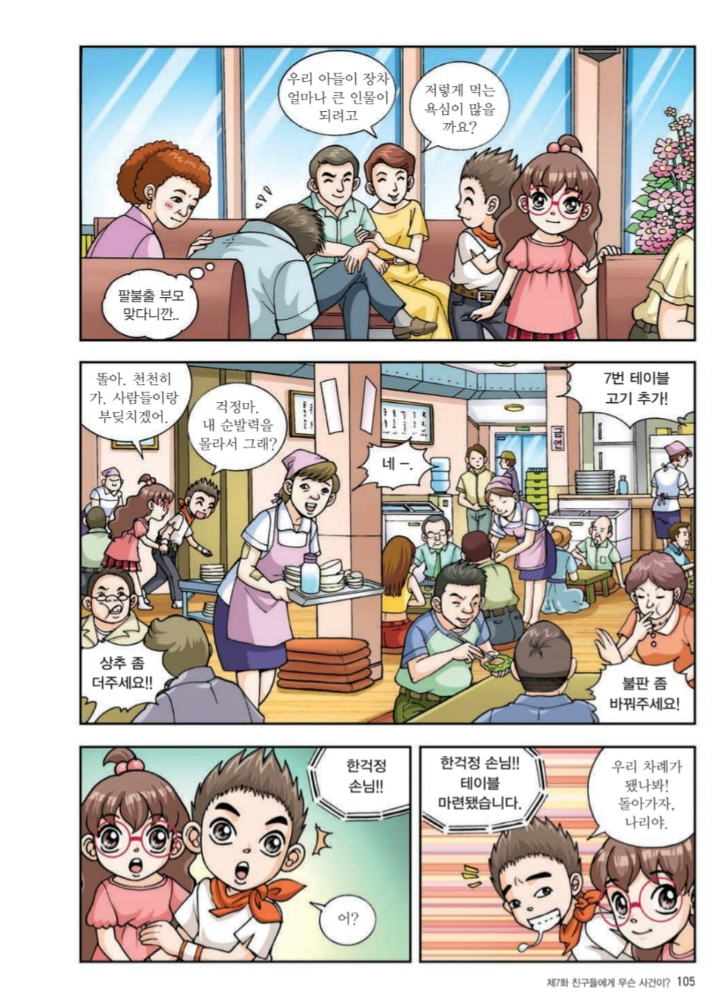
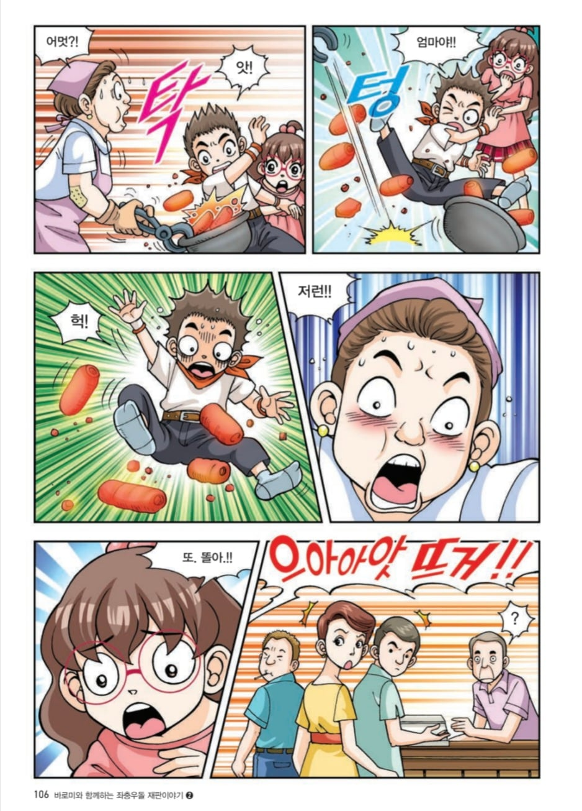
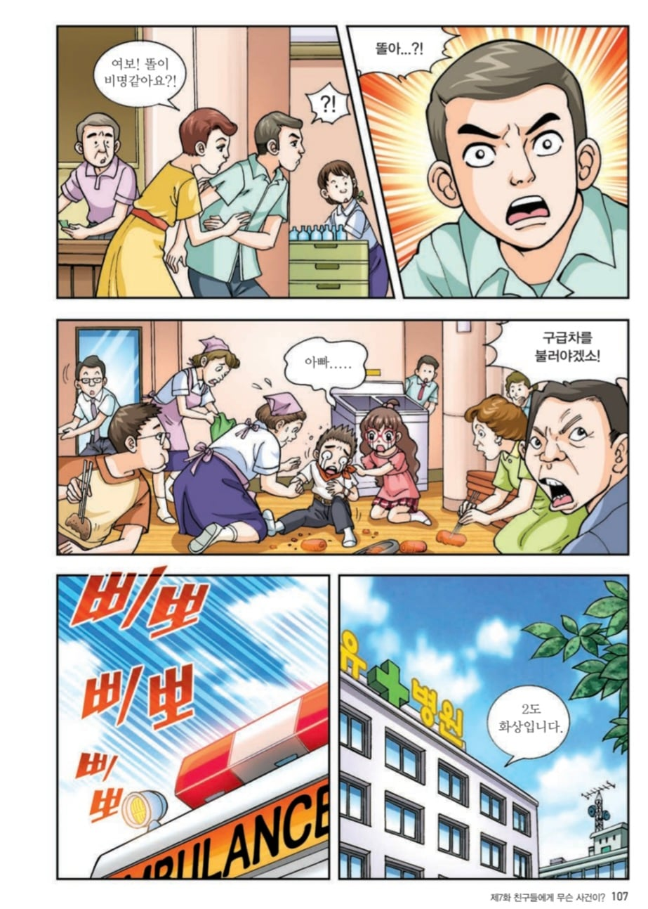
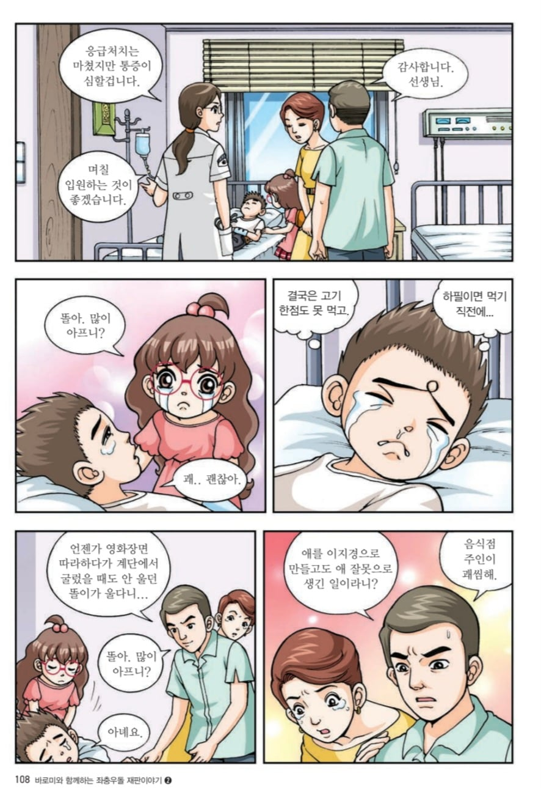

막 달궈진 숯불에 겨우 2도 화상만 입고 끝난다고....? ㄷㄷ




막 달궈진 숯불에 겨우 2도 화상만 입고 끝난다고....? ㄷㄷ
똘똘이에 화상입은겨?
(말 안듣는 애새끼 죽일수 있었는데 살려줘서)음식점 주인이 괘씸해
애가 부딫혀놓고 ㅋㅋㅋㅋ
국물애새끼 사건 생각남 ㅋㅋ
느그 애새끼가 부딧힌건데 뭔
소시지빵이 뜨겁나
라이젠프로토스 효과인가 뭔가로 덜 다쳤네
리사수는 역시 프로토스였던가
근데 저러면 식당이 책임지지 않나? 잘 모르겠네
아님 부모책임?
식당3~5 부모 5~7 공동 책임이 보통
옷 위로 닿은듯
병신같은 애새끼
저 만화는 그림체부터가 인면수심같음
과실 5:5로 처리됨 ㅋㅋㅋ 법원 어린이 홈페이지에 전권 다 바로 볼수 있네
이새끼 온갖 민폐는 다부리네
요즘에 이 만화로 개드립 자주가네
법 관련 만화다보니까 골때리는 사건이 많아서요...
만화에서는 2500만원 소송 이라고 나오는데 5:5 판결이면 가게 주인이 1250만원 배상인가? 아니면 서로 각자 피해본거 알아서 정리인가?
??? 애 잘못 맞잖아
부모랑 새끼랑 둘다 고아임?
잠깐 닿았으면 2도 가능
???: 대체 왜 노키즈존을 하나요ㅠ?
그나마 다행이네 자지가 탄건 아니라서
불내성 ㅈ되네 소방관해야될듯
저 만화 가족들이 너무 쓰레기라서 좃같다. 하나같이 진상의 표본이야